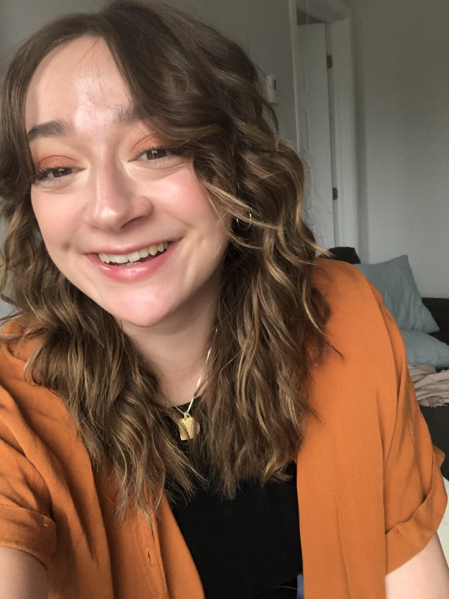

About Me
Laura Rose Elizabeth Clow, 22 years old, is a proud creator, visual storyteller, and published writer. Currently, Laura is a full-time student at Algonquin College where she studies Interactive Media Design, a program which specializes in multi-media production. She is looking forward to a career in the creative industry where she plans to help people tell their stories through web design, copy, digital art, photography, videography, and more.
Laura has a Bachelor of Arts in Psychology from McGill University. After four magnificent years of living in Montreal, Quebec, and studying the wonders of the human mind, she decided it was time to feed her creative soul. After finding the IMD program at Algonquin, Laura moved back to her hometown of Ottawa, Ontario, to continue her journey of growth. She is the 3rd child of two loving parents who support her as she spreads her wings. Laura values growth in every stage of life and loves to travel, expose herself to new experiences, and meet new people. In her spare time, Laura loves to laugh with loved ones, paint, read, hike, and feel the sun on her skin.
"There is no greater agony than bearing an untold story inside you." - Maya Angelou